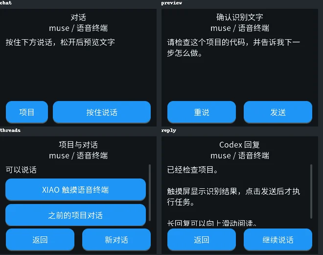

Muse
一个按住说话的触摸屏终端：电脑本机用 Whisper 转写，我在屏幕上核对文字后，才提交给选定的 Codex 会话，回复再送回屏幕。设计上最在意的一点，是一次语音只对应一次确定的提交。

- 做什么
- 用语音给电脑上的 Codex 会话派任务，在小屏上看回复、回答选择题、处理审批
- 我做的
- 个人项目：硬件接线、ESP32 触摸固件、电脑端 Agent、本地语音识别、USB 与无线连接
- 技术栈
- ESP32-S3 · LVGL · faster-whisper · Codex App Server · TLS WebSocket
- 硬件
- XIAO ESP32S3 Plus、2.8 寸 ILI9341 屏（XPT2046 电阻触摸）、INMP441 数字麦克风
- 难点与解决
- 打开项目时，默认的会话列表扫描 15 秒内没跑完，等待期间串口缓冲会写满。改为只查状态库（本机约 2 ms），并把 USB 收包和业务处理拆成两个任务。
- 目前进展
- USB 和局域网下的语音往返已实测；手机热点能联网，热点下的语音往返还没验收。
触摸界面与确认
原型由 XIAO ESP32S3 Plus、2.8 寸触摸屏和 INMP441 数字麦克风组成，界面用 LVGL。项目和会话列表从电脑读取。按住录音、松开识别，屏幕先显示转写文字，我点确认后才提交给选定的会话。
- 录音按住屏幕说话，边录边传
- 预览电脑识别，屏幕核对文字
- 发送确认后运行，设备收到回复
同一块屏幕还能滑动阅读回复、回答选择题、批准电脑端的操作请求。录音和任务进行时锁定当前项目与会话；返回菜单和停止任务是两个独立操作，停止需要再确认一次。
本地识别
设备发送 16 kHz、16 bit 单声道 PCM，单次 0.5～30 秒。电脑把音频交给 faster-whisper：VAD 先过滤无语音区间，再由 Whisper 解码。GPU 用 FP16，CPU 用 INT8。GPU 初始化或实际推理失败时，用 CPU 重跑这段输入。不调用任何语音云服务，音频只留在内存里。
- 音频PCM 流送到电脑
- 本地转写VAD、Whisper、失败时 CPU 回退
- 会话确认后提交给绑定的对话
模型在服务启动后后台预加载并常驻，默认 beam size 为 1，可以在配置里调到 5。
一次语音，一次提交
语音终端最怕的不是识别错，而是“说了一句，执行了两次”，或者确认点到了别的会话上。我把一次语音从头到尾绑在同一个请求上：
- 录音开始锁定项目与会话
- 生成预览带身份，五分钟过期
- 确认到达校验预览身份与状态后提交
确认只对应那一条具体的预览，过期的确认不能重放。提交后的任务标识写进本机 SQLite；断线时已启动的任务继续跑，设备重连后恢复状态，但不会自动重复提交。电脑端程序重启后，未完成的任务标为 unknown，同样不自动重试。
Codex 通过本机 stdio 的 App Server 运行，不暴露到网络上，只能选择配置里登记过的项目。账号凭据始终留在电脑上，设备只持有自己的配对令牌。
打开项目时的卡顿
实机联调时，在屏幕上点开一个项目要等很久才出对话列表。查下来是两件事叠在一起：
- 列表查询太慢。默认的会话列表查询会扫描全部历史记录，15 秒内没有完成。改为只查状态库后，本机对照查询约 2 ms；同时给列表请求设 10 秒上限，超时保留连接，提示重试。
- 等待时没人收包。原来 USB 收包和业务处理在同一个流程里，等 Codex 的这段时间设备发来的状态没人读，串口缓冲一旦写满就会丢帧、触发重连。我把收包和业务处理拆成两个独立任务，业务队列限定容量，断开时取消还在等的处理。
修完后在真实设备上测：连续三次会话列表查询约 4.5～5.3 ms，屏幕显示 9 个对话，之后 15 秒内收到 7 次新的屏幕状态，始终保持同一个 USB 会话，没有再退回项目列表。
USB、局域网与热点
同一个电脑端程序同时接 USB 和无线，共用会话、预览和任务记录。设备优先用已建立的 USB 数据会话，没有 USB 时走 Wi-Fi。
- USB
- 串口承载设备事件与音频，也用来首次写入 Wi-Fi 和可信端点。
- 局域网
- 设备通过 TLS WebSocket 直连电脑，使用单独的本机 CA，校验证书和主机名，并持有配对令牌。
- 手机热点
- 设备经热点上网，再由电脑上的 Tailscale Funnel 转发到本机回环端口。ESP32 本身不跑 Tailscale。
无令牌的请求会被拒绝，同一设备的重复连接也会被拒绝。对外入口只有健康检查和受认证的设备协议。
实机验证
XIAO 实机完成了 USB 下的录音、识别、确认提交和屏幕阅读回复。断开 USB 数据通道、只用无线时，设备通过局域网 TLS 同步项目，并在屏幕上录音、发送、收到了回复。经 Funnel 的远程连接和手机热点联网也已实测可用。
- beam 5，冷启动含加载
- 1942
- beam 5，热机
- 158
- beam 1，预加载后首次
- 338
- beam 1，热机
- 116
热机后 beam 5 也只要 158 ms，冷启动慢主要慢在模型加载。现在的版本在服务启动时后台预加载（另耗 667 ms，不占用户等待），默认 beam 1，两次热机识别分别为 116 和 117 ms。这些数字不含无线往返和 Codex 响应。
局限与下一步
- 热点语音往返未验收。热点下设备已能联网并同步项目，但完整的录音、发送、收回复还没单独确认。
- 识别准确率只看过少量样本。噪声、说话距离、连续多轮和英文技术名词的准确率还要用真实录音系统地测。
- 桌面会话共享。目前不建议桌面和设备同时写同一个会话，不同客户端之间的状态共享还需逐一实测。
- 硬件还很原型。背光常亮，固件只能经 USB 更新，没有 OTA；没有电池管理，靠充电宝供电，暂不给续航指标。